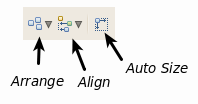

Some OpenDDS modeling elements, such as Packages and Domain Participants, can have nested compartments of figures. Sometimes these compartments can become cluttered as you add figures to them, as shown below.

The diagram toolbar includes some buttons to automatically resize and reposition your figure elements:
The Arrange button will reposition figures so they will not overlap. If you select a figure within a compartment and then select Arrange All, that figure and the others within the compartment will be rearranged.
The Auto Size button will expand a parent figure as needed to accommodate its children. Auto Size will also shrink a figure if it has unused space.
If you manually resize a figure with compartments, collapsing a compartment will not result in a figure being reduced in size as you might expect. Select the figure and then enable Auto Size to have the figure shrink too.
After issuing Auto Size and Arrange All a few times you can un-clutter your compartments: